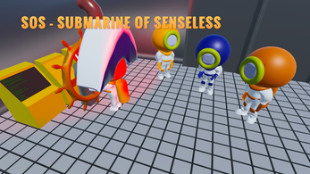

Game Jam Univali + Xamk.
Project description
I participated Game Jam Univali + Xamk on 24 September 2022 – 26 September 2022. For the first time I was along making a game for game jams. The team included Tarita Karhulahti and Riku Heino and we had 48 hours’ time to create a game that fit the predetermined theme. The theme of these game jams was "assembly and disassembly". We started planning our game and tossing around different ideas and finally ended up with SOS - Submarine of senseless where the captain has gone insane and is trying to destroy the submarine. Player has 2 minutes time to fix the submarine otherwise the game ends. This game can be played with friends and the maximum number of players is 4. The goal of the game is to survive and fix the submarine that the captain destroys. When the plan was completed Riku 3d modelled the characters and the game world for us. My task was to program the movement for the characters, and I made the main menu, but luckily there was also experienced programmers in the team who helped me if I didn't know something. On Friday, we planned the game, and we started making the game, and on Saturday the work continued. On Sunday, we made small additions, fine-tuned the game and assembled the game. We got the game done during the game jams as intended.

Description of the task
My task in the team was to program the game with Tarita. I was responsible for making the UI and the movement for the character using the input system. I had to remove the options menu from the start menu because options menu didn’t work. After I got my tasks done, I started helping with the animation. I made the movement for the characters in the start menu and the movement for the wheel in the game when the captain moved. I also added music and sounds to the project.
Description of methods
In the game, the player moves the character with controller and fixes the problems that emerges in the submarine. There were three types of problems, which were a gas leak, the breakdown of the electrical cabinet, and pipe overheating. In the gas leak, the player has to tap the b button on the controller, trying to stop the gas leak. After the electrical cabinet breaks down, the player has to rotate the right joystick of the controller clockwise to repair the cabinet. When the pipe overheats, the player has to rotate the right joystick of the controller counterclockwise. The most important thing in the game is to keep the submarine health level high enough when time runs out.
private void Awake()
{
controller = GetComponent();
Instance = this;
}
private void Start()
{
anim = GetComponent();
}
public int GetPlayerIndex()
{
return playerIndex;
}
public void SetInputVector(Vector2 direction)
{
inputVector = direction;
}
void Update()
{
Vector3 move = new Vector3(inputVector.x, 0, inputVector.y);
controller.Move(move * Time.deltaTime * MoveSpeed);
if (move != Vector3.zero)
{
gameObject.transform.forward = move;
}
playerVelocity.y += gravityValue * Time.deltaTime;
controller.Move(playerVelocity * Time.deltaTime);
if (lastPosition != transform.position)
{
isMoving = true;
lastPosition = transform.position;
}
else
isMoving = false;
}
public void OnMove(CallbackContext value)
{
inputVector = value.ReadValue();
}
private void LateUpdate()
{
DoAnimations();
}
void DoAnimations()
{
if(isMoving)
{
anim.SetBool("isWalking", true);
anim.SetBool("isWorking", false);
anim.SetBool("isIdling", false);
}
else
{
anim.SetBool("isWalking", false);
anim.SetBool("isWorking", false);
anim.SetBool("isIdling", true);
}
}
public void OnTapping(InputAction.CallbackContext context)
{
if (!context.performed)
{
return;
}
if (context.interaction is TapInteraction)
{
if (ableToRepair == true)
{
RepairPipeTab();
anim.SetBool("isWalking", false);
anim.SetBool("isWorking", true);
anim.SetBool("isIdling", false);
}
}
}
public void ResetTabs()
{
tabAmount = 0;
}
public void RepairPipeTab()
{
tabAmount++;
}
}
From the code above, you can see the character movement in the game.
Problems and solutions
My first problem came when I had to use the input component. The Input component did not read the given values that the user entered from the controller. We solved the problem by setting the correct functions in the input settings for the event. Second problem came when we started to assemble the game with the main menu. We had to use the same controller input system there. There was no time to fix the main menu because time was running out. Also, we had to leave the options menu out because we didn't manage to fix it in the last few hours.
Final assessment
I’m really happy how well the project turned out. We managed to make a functional game during the game jam. I really enjoyed being involved in planning of the game and programming it. I achieved much more than I would have thought and learned a lot of new things, I am very satisfied in the team's results.